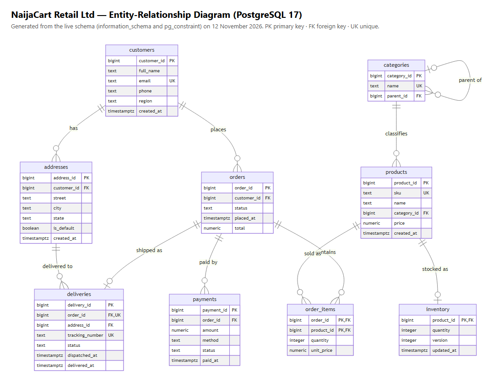

| Student | Olayode Alade | Matric number | 0313301905859 |
| o.alade5859@miva.edu.ng | Date | November 2026 | |
| Repository | https://github.com/mckostas247-art/AdvancedDatabase8103CA (private; assessor access: [assessor GitHub handle added as collaborator / access on request]) | ||
NaijaCart Retail Ltd is a simulated Nigerian online retailer, based in Lagos and delivering nationwide. I chose the brief's e-commerce case and used it for all five activities. The database serves customers (browsing, ordering, paying, tracking deliveries), warehouse staff (stock and dispatch), the finance team (payment reconciliation and reversals) and the web application backend. It stores customers, addresses, a category hierarchy, products, inventory, orders, order lines, payments and deliveries in PostgreSQL 17, and a flexible product catalogue in MongoDB 7. Everything runs in Docker, so every result below can be reproduced from the repository.
| Activity | What I built | Evidence and key result |
|---|---|---|
| 1. Design and modelling | Nine-table schema in 3NF with named primary, foreign, unique and check constraints; a partial unique index allows one default address per customer. order_items.unit_price keeps the historical price; orders.total is a deliberate, transaction-maintained denormalisation. |
schema.sql, ER diagram (Figure 1), constraints.txt. Six deliberate rule-breaking inserts were each refused by the intended constraint (constraint-tests.txt). |
| 2. Query optimisation | Seeded 50,000 customers, 500,000 orders and 1,538,156 order lines; three business queries measured with EXPLAIN (ANALYZE, BUFFERS) before and after indexing. |
Query 1: composite index (customer_id, placed_at DESC) cut 38.48 ms → 0.53 ms and 4,901 → 29 buffers. Query 2: a partial index helped only slightly (median 399 → 269 ms) because the seeded dates were scattered (correlation 0.000); a materialized daily summary brought it to a median of 9.3 ms with identical results. |
| 3. Transactions and concurrency | Atomic place-order transaction with commit and constraint-triggered rollback; four two-session races on the last unit in stock; isolation-level comparison; durability test. | Without a lock, one unit was sold twice (orders 500003 and 500004). The CHECK constraint, an optimistic version check (UPDATE 0) and SELECT … FOR UPDATE (Session 2 waited 2.6 s) each prevented it. A hard docker kill was followed by WAL recovery with committed orders intact. |
| 4. NoSQL | Product catalogue as MongoDB documents with category-specific attributes and embedded reviews; compound and text indexes; aggregation pipeline. |
21 documents loaded; nested-attribute filter, text search and per-category rating averages work; explain() shows IXSCAN on category_1_attributes.brand_1. Orders and stock stay in PostgreSQL for ACID guarantees. |
| 5. Distributed and cloud | PostgreSQL primary and streaming replica in Docker; manual failover; sharding, CAP and cloud design. | Replica streaming asynchronously with 4 ms replay lag; it refused writes. After the primary was stopped, pg_promote() made the replica writable and committed orders survived; order IDs jumped 6 → 34 (sequence pre-logging). Design: hash sharding on customer_id; checkout CP, catalogue AP. |

Portfolio-1-database-design/er-diagram.png).Screenshots and evidence. Each portfolio folder has a README.md explaining how the activity was implemented and tested, the raw output files (results/, plans/, transcripts) and a screenshots/ folder with 22 images. The images are the captured terminal output rendered to PNG; each image's title bar names the output file it shows.
Design choices. I kept money in NUMERIC(12,2) and stock rules in the database rather than only in application code, and the concurrency tests justified that: in the race where the application logic was wrong, the quantity >= 0 constraint was the only thing that stopped an oversell. For the catalogue I used MongoDB only where the data really varies (product attributes and reviews), and kept everything financial in PostgreSQL.
Challenges. The large seed first failed because my C: drive ran out of space and Docker's disk became read-only; I had to free space and restart Docker before any measurement was possible. My first Query 2 index did not give the improvement I expected, and the plans showed why: the index found the right orders but they were spread over almost every page, and most of the cost was the full scan of order lines. A covering index was ignored by the planner. The bitnami PostgreSQL images had been withdrawn from Docker Hub, so the replica setup needed the legacy image and a superuser password. My MongoDB aggregation failed because $round cannot be used inside $group. My first optimistic-locking run was not a genuine race, so I re-ran it until both sessions had read the same version.
Lessons learned. Measure, then repeat the measurement: single timings for Query 2 varied more than the effect I was testing. An index only helps if it avoids reading most of the table, and that depends on how the data is physically laid out, which pg_stats.correlation shows. For dashboard-style aggregates, a pre-aggregated summary beats indexing, at the cost of freshness. Failover is not free: committed-but-unshipped transactions can be lost under asynchronous replication, and IDs can have gaps. In my day job I work with production databases, and these are the habits I will take back: reading buffers as well as time in plans, testing races with two real sessions, and rehearsing failover before it is needed.
Amazon Web Services. (2025). Multi-AZ deployments for high availability. Amazon RDS User Guide. https://docs.aws.amazon.com/AmazonRDS/latest/UserGuide/Concepts.MultiAZ.html
Docker, Inc. (2025). postgres (17-alpine) and mongo (7) Docker Official Images; Bitnami. bitnamilegacy/postgresql (17). Docker Hub. https://hub.docker.com
Federal Republic of Nigeria. (2023). Nigeria Data Protection Act, 2023.
Miva Open University. (2026). MIT 8103 Advanced Database Systems [Course material and continuous assessment brief].
Mermaid. (2024). Mermaid (Version 10.9.1) [Diagramming library]. https://mermaid.js.org
MongoDB, Inc. (2024). MongoDB manual (Version 7.0). https://www.mongodb.com/docs/v7.0/
PostgreSQL Global Development Group. (2024). PostgreSQL 17 documentation. https://www.postgresql.org/docs/17/
All data in the repository is synthetic: sample rows written for the case study and bulk rows generated with PostgreSQL generate_series. No external datasets were used.
| Tool | What it was used for |
|---|---|
| [name of the AI tool used for the first drafts] | Generating first drafts of the SQL scripts, MongoDB scripts and portfolio READMEs. |
| Claude (Anthropic), through Claude Code | Running all five activities on my machine in Docker and capturing the output; finding and fixing errors (formatting left in the SQL files, the $round aggregation bug, the withdrawn replica image); running the Query 2 index experiments, the durability test and the failover test; generating the ER diagram and rendering the output files as screenshots; rewriting the README files for all five activities from the real results, and drafting this document. |
How I reviewed and verified the output. I ran the repository's commands myself and checked that the figures in each README and in this document match the output files in the repository (plans/, results/ and the transcripts). I corrected statements that the real runs contradicted, such as the earlier estimated timings, and I have read every section so that I can explain the design, the results and the trade-offs if selected for verification. I remain responsible for the accuracy of this submission.